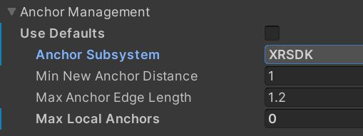

Cross Platform using Unity's XR SDK Plugin system
Initial development of the World Locking Tools targeted the HoloLens family of devices via Unity's XR.WSA (VR/AR Windows Store App) APIs. This is part of what has become commonly known as Unity's Legacy XR interface, or Unity's built-in VR support.
Unity has since introduced its XR Plugin architecture, whose goal is to provide cross platform abstractions giving developers access to common features across available VR and AR devices.
During this transition phase, WLT has supported both the Legacy XR interface for HoloLens, and the AR Subsystems/XR Plugin Management for cross-platform. It should be noted that the Legacy XR interface is deprecated since Unity 2019, and is no longer supported as of Unity 2020.
WLT currently supports AR Subsystems versioned 2.X.Y for Unity 2019.4 (LTS) and XR Plugin Management versioned 4.0.7 and later for Unity 2020.3 (LTS). Further version support will be rolled out in subsequent releases.
Switching WLT to target XR SDK
Targeting WLT for XR SDK is exceedingly simple. First, configure your project to use the XR Plugin system.
If using MRTK, follow these instructions. There are additional tips and notes later in this article.
If not using MRTK, then follow these slightly more complicated instructions.
In either case, you will end up with Unity's XR Plug-in Management system installed and enabled, and with an XR Plug-in provider appropriate for your platform installed and selected.
Once the necessary resources have been installed, change the Anchor Subsystem type in the World Locking Context in your scene.
Automatic selection
Running the script Mixed Reality => World Locking Tools => Configure scene will select the correct Anchor Subsystem based on how your project and scene are configured. It is safe to run the Configure scene script repeatedly. If the scene is already properly configured, it will make no changes.
Manual selection
- Go to the WorldLockingManager GameObject in your initial (or global) scene.
- In the inspector, find the WorldLockingContext.
- Open Anchor Management settings.
- Make sure the "Use Defaults" checkbox is unchecked.
- Change the Anchor Subsystem type to
XRSDK.
If your project and scene are setup to use AR Foundation, then select the AR Foundation Anchor Subsystem instead. The Azure Spatial Anchors samples show a proper configuration for using AR Foundation (currently an ASA requirement).

Using MRTK with WLT on XR SDK
MRTK, in addition to the incredible value it provides for abstracting user interactions in VR and AR, simplifies targeting devices via the XR SDK greatly. The following are notes that might prove helpful when setting up MRTK to target specific devices.
These all assume that the WLT Anchor Management Anchor Subsystem has been set appropriately as described in the previous section.
Be sure to run the Mixed Reality Toolkit => Utilities => UnityAR => Update Scripting Defines when changing plugin targets.
Setup for Windows XR Plugin (HoloLens)
See full instructions at Getting started with MRTK and XR SDK.
If working in the WLT project, you can use the WLT provided “WLT HL2 MRTKProfile” on HoloLens2, or the "WLT AR MRTKProfile" on mobile devices, to start.
WLT using Windows XR Plugin has been tested on Unity 2019.4 and Unity 2020.3, using the following versions:
- XR Plugin Management: v3.2.16 (expected to work with v3.X.Y, X >= 2)
- Windows XR Plugin: v2.4.1 (prior to v2.4.1 anchors were broken. Expected to work v2.4.Y, Y>=1, v2.X.Y, X>=1).
- Mixed Reality OpenXR Plugin: v1.2.0 (earlier versions worked, with minor issues. The latest MR OpenXR Plugin is highly recommended.)
You only need one of either the Windows MR Plugin or the Mixed Reality OpenXR Plugin.
Setup for ARCore XR Plugin (Android)
To get an Android XR Plugin driving an MRTK AR application, follow the instructions at How to configure MRTK for iOS and Android
NOTE: You need ALL of:
- XR Plugin Management (tested v3.2.16, expected v3.X.Y, X>=2).
- AR Subsystems (tested v2.1.3, expected v2.X.Y, X>1).
- AR Core XR Plugin (tested v2.1.12, expected v2.X.Y, X>1).
- AR Foundation (tested v2.1.10, expected v2.X.Y, X>1).
I suggest using the WLT provided “WLT AR MRTKProfile” to start.
NOTE: If you hit a build error about manifest-merger failed, then follow the appropriate instructions here: https://developers.google.com/ar/develop/unity/android-11-build
Setup for other XR Plugins (ARKit, Oculus, etc.)
Setup for other platforms might be analogous to setup for ARCore, but have not been tested. If you have access to such devices and a chance to try them, any feedback would help the community and be greatly appreciated.